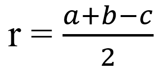
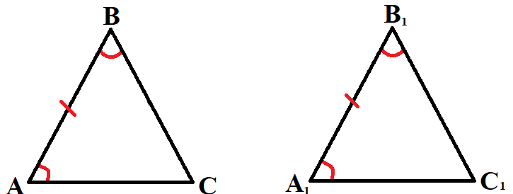
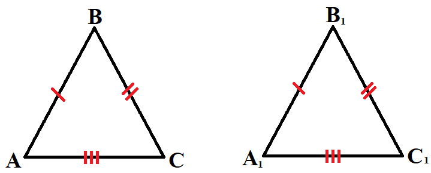
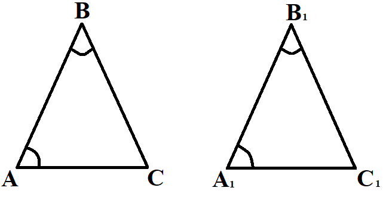

Теория
Треугольник
- Треугольник — это геометрическая фигура, которая состоит из трёх точек, не лежащих на одной прямой (вершин треугольника) и трёх отрезков с концами в этих точках (сторон треугольника).
- Углами (внутренними углами) треугольника называются три угла, каждый из которых образован тремя лучами, выходящими из вершин треугольника и проходящими через две другие вершины.
Внешним углом треугольника является угол, смежный внутреннему углу треугольника:
Запомни!
- Сумма углов треугольника равна 180°
α + β + γ = 180°- Длина каждой стороны треугольника больше разности и меньше суммы длин двух других сторон:
AB + BC >AC
AC + AB >BC
AC + BC >AB- В треугольнике против большего угла лежит большая сторона, против большей стороны лежит больший угол.
Медиана, биссектриса, высота
- Медиана треугольника — отрезок, соединяющий его вершину с серединой противоположной стороны.
AM – медиана, BM = MC. - Биссектриса треугольника — отрезок, соединяющий вершину треугольника с точкой на противоположной стороне и делящий угол треугольника пополам.
∠ AHB = ∠ CHB = 90° - Высота треугольника — это перпендикуляр, опущенный из его вершины на противоположную сторону.
∠ ABH = ∠ CBH
Средняя линия треугольника
- Средняя линия треугольника — отрезок, соединяющий середины двух сторон треугольника.
- Средняя линия параллельна одной из сторон треугольника и равна ее половине.
- AK = KB, BL=LC, KL || AB, KL=
 AC
AC
Формулы площади треугольника:
- S = a∙h, где a – сторона, h – высота, проведенная к ней.
- S = a∙b∙sinα, где a, b – стороны, а α – угол между сторонами a и b.
Виды треугольников
Равнобедренный треугольник
- Две стороны равны — боковые стороны.
- Третья сторона — основание.
- Углы при основании равны.
- В равнобедренном треугольнике высота, проведенная к основанию, является медианой и биссектрисой.
Равносторонний треугольник
- Все стороны равны
- Все углы равны по 60°.
- Медианы, биссектрисы и высоты совпадают.
- Радиус окружности, вписанной в правильный треугольник со стороной a:
- Радиус окружности, описанной около правильного треугольника со стороной a:
Прямоугольный треугольник
- Один из углов равен 90°.
- Сумма острых углов равна 90°.
- Катет, противолежащий углу в 30°, равен половине гипотенузы. И обратно, если в треугольнике катет в два раза меньше гипотенузы, то напротив него лежит угол в 30°.
- Теорема Пифагора:
с2 = a2 + b2, с – гипотенуза, a и b – катеты. - Площадь: S = a∙b, a и b – катеты.

- Высота h прямоугольника треугольника, проведенная к гипотенузе, равна:
, где a и b – катеты, с – гипотенуза. - Центр описанной окружности – середина гипотенузы.
- Радиус R описанной окружности есть половина гипотенузы с:
- Медиана, проведенная к гипотенузе, равняется ее половине.
- Радиус r вписанное окружности равен:
, где a и b – катеты, с – гипотенуза.
Тригонометрические соотношения
- Синусом угла в прямоугольном треугольнике называется отношение противолежащего катета к гипотенузе.
- Косинусом угла в прямоугольном треугольнике называется отношение прилежащего катета к гипотенузе.
- Тангенсом угла в прямоугольном треугольнике называется отношение противолежащего катета к прилежащему.
- Котангенсом угла в прямоугольном треугольнике называется отношение прилежащего катета к противолежащего.
Кроме того:
- sin2(x) + cos2(x) = 1
- tg(x)ctg(x) = 1
Равенство треугольников
Если ΔAВC и ΔDEF можно совместить наложением, то они являются равными. У равных треугольников равны и их соответствующие элементы.
Первый признак равенства треугольников:
- По двум сторонам и углу между ними.
Если AB = A1B1, BC = B1C1, ∠ABC = ∠A1B1C1, то ΔABC = ΔA1B1C1
Второй признак равенства треугольников:

- По двум углам и стороне прилежащей к ним.
Если AB = A1B1, BAC = B1A1C1, ∠ABC = ∠A1B1C1, то ΔABC = ΔA1B1C1
Третий признак равенства треугольников:

- По трём сторонам.
Если AB = A1B1, AC = A1C1, BC = B1C1, то ΔABC = ΔA1B1C1
Подобие треугольников
- Подобные треугольники — треугольники, у которых углы соответственно равны, а стороны одного соответственно пропорциональны сторонам другого треугольника.
Коэффициент подобия:
Величина, которая равна отношению сходственных сторон треугольников, называется коэффициентом подобия. Коэффициент подобия треугольников обозначается буквой k, k > 0. Таким образом, приведённое выше равенство можно записать в виде:
Первый признак подобия треугольников

- Если два угла одного треугольника соответственно равны двум углам другого, то такие треугольники подобны.
Если ∠A = ∠A1 и ∠B = ∠B1, то ΔABC ∼ ΔA1B1C1.
Второй признак подобия треугольников
- Если две стороны одного треугольника пропорциональны двум сторонам другого треугольника и углы, образованные этими сторонами, равны, то такие треугольники подобны.
Если ∠B = ∠B1, , то ΔABC ∼ ΔA1B1C1.
Третий признак подобия треугольников
- Если три стороны одного треугольника пропорциональны трём сторонам другого, то такие треугольники подобны.
Если , то ΔABC ∼ ΔA1B1C1.
Площади подобных треугольников
Отношение площадей подобных треугольников равно квадрату коэффициента подобия. Отношение длин соответствующих элементов подобных треугольников (в частности, длин биссектрис, медиан, высот и серединных перпендикуляров) равно коэффициенту подобия
Практика
1. Высота равностороннего треугольника равна 13√3 . Найдите сторону этого треугольника.
Показать решение
2. В треугольнике ABC угол C равен 90°, AC = 10, tgA = 0,5. Найдите BC.
Показать решение
3. Два катета прямоугольного треугольника равны 7 и 24. Найдите гипотенузу этого треугольника.
Показать решение
4. У треугольника со сторонами 16 и 2 проведены высоты к этим сторонам. Высота, проведённая к первой стороне, равна 1. Чему равна высота, проведённая ко второй стороне?
Показать решение